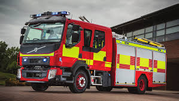

Пожарни Автомобили



РСПБЗН – Тетевен обслужва територия от 697 кв.км с население около 23 000 жители
Адрес: гр. Тетевен, ул. “Иван Вазов” № 89
Телефон: 068 668 643
Email: fscp-rs-teteven@mvr.bg
Приемно време: сряда от 14:00 ч. до 16:00 ч.
| Екип | Име | Длъжност |
|---|---|---|
| A | Венцислав Илиев | Шофьор |
| A | Явор Михайлов | Пожарникар |
| A | Емил Христов | Пожарникар |
| A | Мирослав Вълчев | Спасител |
| A | Гергана Симеонова | Спасител |
| Б | Любомир Панайотов | Шофьор |
| Б | Кирил Тодоров | Пожарникар |
| Б | Радослав Георгиев | Пожарникар |
| Б | Асен Василев | Спасител |
| Б | Станислав Петров | Спасител |
| В | Пламен Михайлов | Шофьор |
| В | Атанас Илиев | Пожарникар |
| В | Кирил Костов | Пожарникар |
| В | Борислав Стефанов | Спасител |
| В | Радослав Павлов | Спасител |